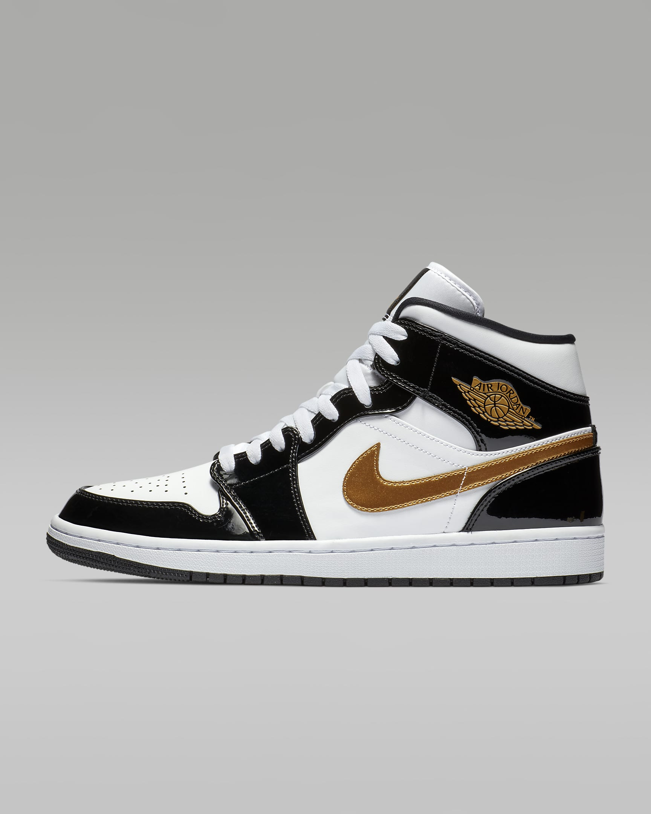

Nike Dunk Low Retro
El icono del baloncesto de los 80 vuelve con detalles clásicos y un estilo de baloncesto retro. La zona del tobillo acolchada y de perfil bajo lleva el estilo vintage a las calles y te permite jugar con comodidad en cualquier parte.
$135.000
Obtener

Air Jordan 1 Mid SE
Los nuevos colores y las texturas innovadoras ofrecen una versión actualizada de las AJ1 para mantener el look ideal y familiar. Este básico atemporal se renueva con materiales premium y se ha reforzado con detalles sutiles (como el logotipo Swoosh con estampado tipo piel de elefante y el logotipo dorado) para ofrecer unas zapatillas básicas con un toque innovador.
$225.000
Obtener
Nike Pegasus 39 Shield

Tus todoterreno con alas vuelven para ayudarte a afrontar la lluvia. El acabado repelente al agua te protege de la lluvia, al tiempo que el cálido tejido Fleece del interior mantiene la calidez en los pies para correr en condiciones adversas. La tracción resistente y las dos unidades Zoom Air proporcionan agarre y una amortiguación suave para que puedas darlo todo aunque haga mal tiempo.
$210.000
Obtener
Nike Zoom Metcon Turbo 2
El icono del baloncesto de los 80 vuelve con detalles clásicos y un estilo de baloncesto retro. La zona del tobillo acolchada y de perfil bajo lleva el estilo vintage a las calles y te permite jugar con comodidad en cualquier parte.
$350.000
Obtener